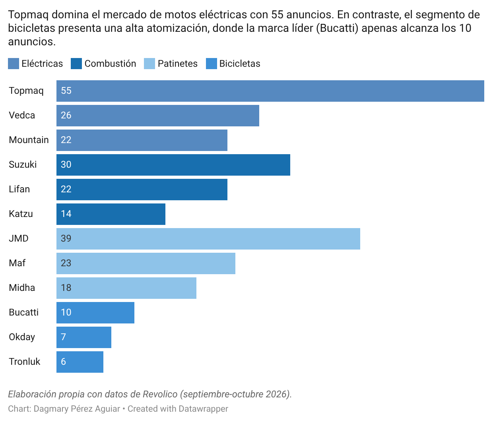
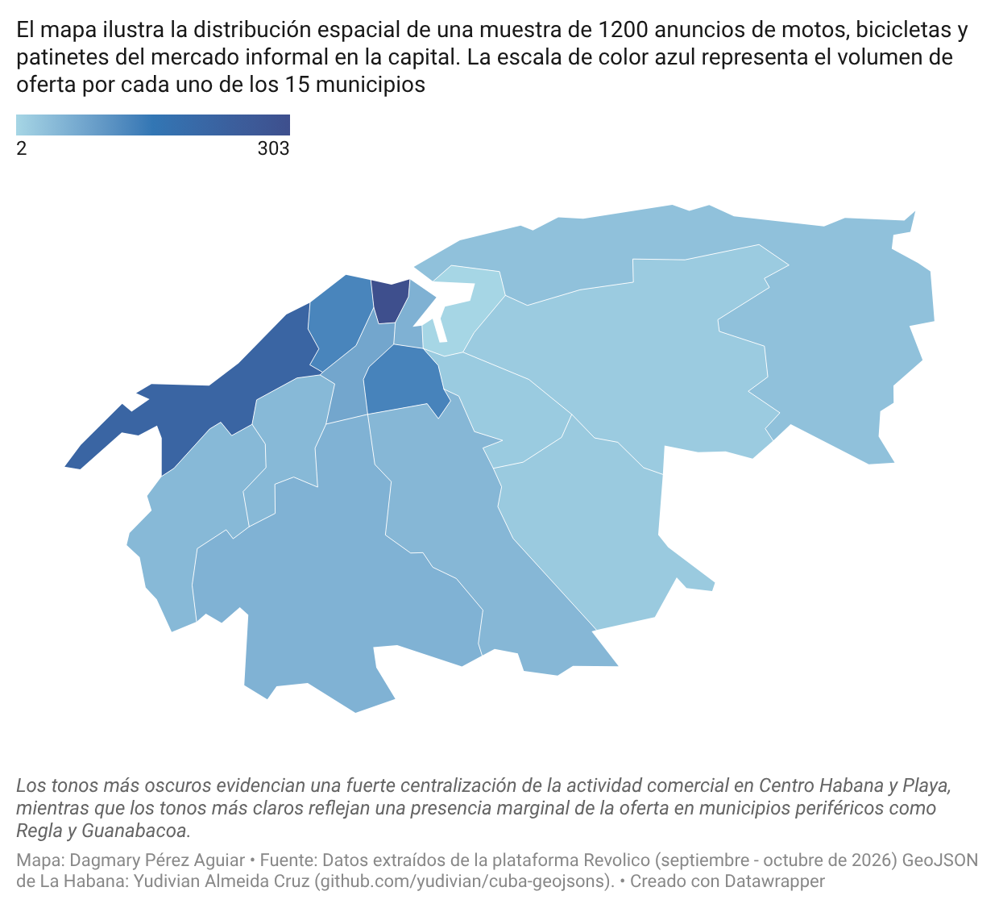
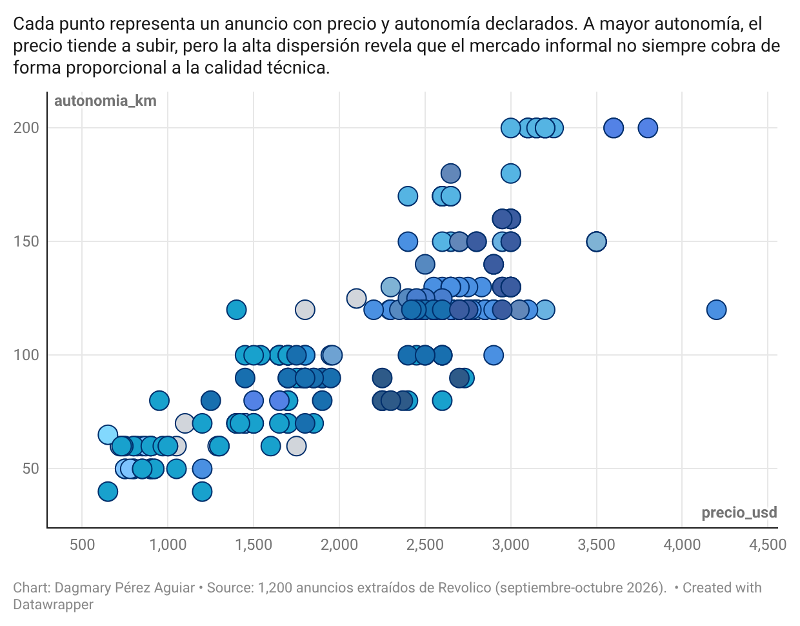

Anuncios
1,200
300 por categoría
Entrevistas
30
usuarios en La Habana
Fuentes
49
documentales
Sobreprecio informal
86%
vs VEDCA
La preferencia por la movilidad eléctrica no responde a un criterio ambiental, sino a una adaptación racional frente al colapso del transporte público y el costo del combustible.
Resumen Ejecutivo
Este estudio presenta un análisis integral del mercado de vehículos ligeros (motos eléctricas, de combustión, bicicletas y patinetes) en La Habana, abordando tanto la oferta del mercado informal como la percepción de los usuarios y el marco regulatorio vigente. Para ello, se empleó una metodología mixta que combinó el análisis masivo de anuncios clasificados, entrevistas en profundidad a usuarios y la revisión de fuentes normativas oficiales. La evidencia empírica se apoya en 1,200 anuncios clasificados, 30 entrevistas en profundidad y 49 fuentes documentales.
Los hallazgos principales revelan un mercado fuertemente centralizado en los municipios de mayor densidad comercial de la capital, donde la oferta informal domina en volumen. Contra la creencia popular, el estudio demuestra que el mercado informal no ofrece precios más competitivos que el canal formal. Por el contrario, los compradores asumen un sobreprecio significativo, impulsados por la necesidad de inmediatez y la escasez de inventario en las tiendas estatales.
Asimismo, se identificó una profunda brecha entre la normativa estatal, que regula estrictamente los márgenes comerciales y establece incentivos fiscales para la movilidad eléctrica, y la realidad de un mercado informal caracterizado por la falta de garantías y la opacidad documental. Finalmente, el estudio concluye que la adopción masiva de vehículos eléctricos en La Habana no responde a una conciencia ecológica, sino a una estrategia de resiliencia y supervivencia económica de la población frente a la crisis del transporte público y el alto costo de los combustibles fósiles.
1. Introducción
1.1. Justificación y Objetivos
La movilidad urbana en Cuba atraviesa una de sus peores crisis, marcada por el déficit de transporte público y el encarecimiento de los combustibles fósiles. En este contexto, los vehículos ligeros (eléctricos y de combustión) han emergido como la principal solución de transporte para miles de habaneros. El objetivo general de este estudio es caracterizar la estructura de este mercado en La Habana. Los objetivos específicos son: (1) Analizar la oferta y los precios del mercado informal; (2) Identificar el perfil y las motivaciones del consumidor; y (3) Evaluar el impacto del marco regulatorio actual (Decreto 163/2026) en la dinámica del mercado.
1.2. Pipeline Técnico y Fases de Procesamiento
Para abordar esta problemática, se empleó una metodología mixta con tres fuentes de información (anuncios, entrevistas y fuentes normativas). Todo el procesamiento técnico se ejecutó en Python estructurado en cuatro fases principales:
- Fase 1 (Scraping en dos etapas): Extracción automatizada mediante
httpxyBeautifulSoup. El proceso constó de una fase de listado (capturando 148 páginas HTML de búsquedas) y una fase de detalle para extraer la información completa de los vehículos (350 detalles de motos y 532 de combustión). Se implementó un sistema de caché local, reintentos automáticos, un límite ético de 150 peticiones por sesión y pausas de 3 segundos (60 segundos ante errores HTTP 429). - Fase 2 (Limpieza de Datos): A partir de un universo bruto de 3,329 anuncios, se aplicó un riguroso filtro: deduplicación por título y tokens, normalización de moneda a USD, eliminación de valores atípicos (precios fuera del rango de $100 a $5,000), eliminación de ruido y agrupación en buckets de precios ($50). Tras descartar 38 registros por inconsistencias, el universo quedó depurado y de él se extrajo la muestra final de 1,200 anuncios (300 por categoría).
- Fase 3 (Enriquecimiento con Regex): Uso intensivo de expresiones regulares para extraer campos técnicos (motor, voltaje, amperaje, autonomía, peso, etc.) y de estado legal (papeles, factura) desde el texto libre de las descripciones. El enriquecimiento se aplicó exclusivamente sobre los campos nulos, alcanzando una cobertura técnica del 44% al 50% en variables clave.
- Fase 4 (Machine Learning): Aplicación de estadística descriptiva y del algoritmo K-Means para la segmentación de la oferta. Los datos fueron estandarizados con
StandardScaler, fijando una semilla aleatoria (random_state=42) yn_init=10. El modelo se entrenó sobre las 231 motos eléctricas (de 300) que contaban con datos completos de precio, potencia y autonomía.
1.3. Procesamiento de Entrevistas
Paralelamente, las 30 entrevistas de audio fueron transcritas de forma local utilizando el modelo faster-whisper (tamaño medium, ejecutado en CPU con precisión int8 y calibrado para español). Posteriormente, los textos fueron procesados con modelos de lenguaje locales (Ollama, qwen2.5:3b) para su estructuración en un archivo JSON. Finalmente, se realizó una validación y anonimización manual de las 30 entrevistas para asegurar la fidelidad de las citas y mitigar cualquier alucinación del modelo.
1.4. Trazabilidad y Reproducibilidad
Para garantizar la auditoría del estudio, todos los artefactos técnicos se encuentran versionados en el repositorio. Los scripts de extracción están en src/scrapers/, los scripts de análisis en src/analysis/ y los datos finales en data/final/. Tras un incidente de hardware, la caché HTML cruda fue recuperada desde un respaldo de seguridad y restaurada en data/raw/web/revolico/, lo que garantiza que el pipeline completo es 100% reproducible a partir de los datos originales.
2. Resultados de la Oferta (Anuncios)
2.1. Precios por tipo de vehículo (Pregunta 2)
A partir del análisis de los 1,200 anuncios, se observa una clara jerarquía de precios que estratifica el mercado en dos grandes bloques.
Por un lado, los vehículos motorizados de mayor tamaño dominan la parte alta de la tabla: las motos eléctricas presentan el precio mediano más alto ($2,500 USD), seguidas de cerca por las motos de combustión ($2,100 USD). Esta diferencia de apenas $400 USD entre ambas tecnologías sugiere que, en el mercado informal, la elección entre eléctrica y gasolina no está determinada por una gran brecha de precio inicial, sino por los costos operativos (combustible vs. electricidad) y la disponibilidad.
Por otro lado, se ubica el bloque de la micromovilidad, con precios mucho más asequibles: las bicicletas (mediana de $600 USD) y los patinetes (mediana de $595 USD).
Es importante destacar que estos precios del mercado informal contrastan fuertemente con el canal formal. Mientras que una moto eléctrica en Revolico cuesta en mediana $2,500 USD, en la tienda estatal VEDCA el modelo de entrada se consigue por $1,300 USD. Este diferencial de casi el doble (que se profundizará en la Sección 3.2) demuestra que el mercado informal no es un espacio de "ahorro", sino un espacio de inmediatez, donde el comprador paga una prima significativa por no someterse a las listas de espera o la falta de stock del Estado.
¿Es un precio justo?
Precio estimado por el modelo
$2,500
Estimación lineal ilustrativa calibrada con la mediana de 231 anuncios. No es el modelo del informe (MAE ≈ $255 en validación cruzada).
2.2. Marcas y Precios (Preguntas 1 y 3)
En el segmento de motos eléctricas, el mercado está dominado por diez marcas principales. El análisis de frecuencia y precios revela la siguiente estructura:
| Marca | Cantidad de Anuncios | Precio Mediano (USD) |
|---|---|---|
| Topmaq | 55 | $2,600 |
| VEDCA | 26 | $1,925 |
| Mountain | 22 | $2,800 |
| Yoazaki | 18 | $2,950 |
| Izuki | 17 | $2,800 |
| Bucatti | 11 | $2,660 |
| Fly | 11 | $2,500 |
| Kvitova | 8 | $1,675 |
| Maf | 7 | $1,400 |
| Challenger | 7 | $820 |
Se observa que, aunque Topmaq lidera en volumen de oferta, Yoazaki ostenta el precio mediano más alto, lo que sugiere una percepción de mayor calidad o exclusividad en el mercado.

Fuente: elaboración propia a partir de 1.200 anuncios de Revolico (septiembre–octubre de 2026).
2.3. Distribución geográfica y precios por municipio (Pregunta 4)
El análisis geográfico de los 1,200 anuncios revela una fuerte centralización de la oferta en determinados municipios de La Habana. Centro Habana lidera con 303 anuncios, seguido de Playa con 217. Les siguen Diez de Octubre (131), Plaza (128) y Cerro (75). Los municipios periféricos como Regla, Guanabacoa o Cotorro presentan una oferta marginal (menos de 20 anuncios cada uno).

Fuente: elaboración propia a partir de 1.200 anuncios de Revolico (septiembre–octubre de 2026).
Sin embargo, la cantidad de anuncios no se correlaciona directamente con el precio. Al cruzar la oferta con el precio mediano por municipio, emergen hallazgos interesantes:
- Cerro es el municipio con el precio mediano más alto ($1,700 USD), seguido de Cotorro ($1,675 USD) y Playa ($1,650 USD).
- Por el contrario, La Habana Vieja registra el precio mediano más bajo ($670 USD), seguido de Habana del Este ($750 USD) y Arroyo Naranjo ($800 USD).
Análisis: Esta distribución sugiere un mercado segmentado geográficamente. Los municipios del centro-oeste (Centro Habana y Playa) concentran el mayor volumen de oferta, probablemente por su alta densidad poblacional y flujo comercial. Sin embargo, los precios más altos se encuentran en municipios como Cerro o Cotorro, lo que podría estar asociado a la venta de vehículos de mayor gama o con mejores condiciones técnicas.
En contraste, los municipios periféricos del este (Habana del Este) y La Habana Vieja presentan tanto una baja oferta como precios más asequibles, lo que refleja una dinámica de mercado más orientada a la micromovilidad o a vehículos de entrada.
2.4. Datos técnicos y Valor (Preguntas 5 y 6)
El análisis técnico del mercado informal revela dos paradigmas completamente distintos: el de los vehículos eléctricos (donde prima la eficiencia energética) y el de combustión (donde prima la cilindrada y la durabilidad mecánica).
Análisis de Vehículos Eléctricos: Para evaluar la relación calidad-precio de las tres categorías eléctricas, se calcularon los costos por vatio de potencia y por kilómetro de autonomía:
| Categoría | Potencia (W) | Voltaje (V) | Autonomía (km) | Precio Mediano | Costo por Vatio | Costo por Km |
|---|---|---|---|---|---|---|
| Motos Eléctricas | 3,000 W | 72 V | 120 km | $2,500 | $0.83 | $20.83 |
| Bicicletas | 748 W | 48 V | 55 km | $600 | $0.80 | $10.91 |
| Patinetes | 500 W | 48 V | 48 km | $595 | $1.19 | $12.40 |
Nota: costo por vatio = precio mediano / potencia mediana; costo por km = precio mediano / autonomía mediana. El cálculo se realiza sobre las medianas de cada categoría, no sobre el promedio de ratios individuales.
- Las motos eléctricas son el estándar de mayor potencia y autonomía. Su costo por vatio ($0.83) es muy competitivo, aunque su costo por kilómetro ($20.83) es el más alto, reflejando la prima que se paga por un vehículo de transporte principal.
- Las bicicletas eléctricas ofrecen la mejor eficiencia económica: su costo por vatio es el más bajo ($0.80) y su costo por kilómetro ($10.91) es casi la mitad que el de las motos. Son la opción más racional para trayectos cortos.
- Los patinetes, a pesar de tener un precio mediano similar al de las bicicletas, presentan el costo por vatio más alto ($1.19). Esto indica que, por cada unidad de potencia, el comprador paga más en comparación con las otras categorías.
Fuente: elaboración propia a partir de anuncios de motos eléctricas en Revolico (septiembre–octubre de 2026).
El impacto de la tecnología de baterías: El análisis de las tres categorías eléctricas (motos, bicis y patinetes) revela que el mercado ha migrado masivamente hacia la batería de litio: 323 anuncios declaran esta tecnología, frente a 109 que declaran gel/plomo. Aunque tradicionalmente el litio era un componente premium, los datos muestran que el precio mediano de los vehículos que montan litio ($800 USD) es casi idéntico al de los que montan gel/plomo ($780 USD). Es decir, el litio se ha convertido en el estándar del mercado informal sin que ello implique un sobreprecio significativo para el comprador. En cuanto a la carga, ambas tecnologías declaran una mediana de 6 horas.
Fuente: elaboración propia a partir de anuncios de vehículos eléctricos en Revolico (septiembre–octubre de 2026).
Análisis de Motos de Combustión: Por su parte, el mercado de motos de combustión (N=272) presenta un comportamiento dominado por la practicidad. La distribución de cilindradas revela que el mercado se concentra abrumadoramente en motores pequeños y medianos:
Fuente: elaboración propia a partir de anuncios de motos de combustión en Revolico (septiembre–octubre de 2026).
Como muestra el gráfico, el mercado se concentra abrumadoramente en motores pequeños y medianos: las cilindradas de 125 cc y 150 cc representan por sí solas casi dos tercios de la oferta (63.2%). A mayor cilindrada, el precio mediano escala, superando los $2,500 USD en los modelos de 200 cc y 250 cc.
Las características medianas generales son:
- Año de Fabricación Mediano: 2026 (lo que indica una gran presencia de vehículos nuevos o muy recientes).
- Kilometraje Mediano: 3,000 km.
- Marcas dominantes: Suzuki (30 anuncios), Lifan (22), Katzu (13), Ava (9) y MT (9).
Conclusión del análisis técnico: Mientras que el mercado eléctrico compite por ofrecer más autonomía y vatios al menor precio posible, el mercado de combustión se mantiene dominado por marcas históricas (Suzuki, Lifan) que ofrecen motos de 125cc a 150cc, con año de fabricación reciente y kilometrajes muy bajos (3,000 km). Esto sugiere que el comprador de combustión busca durabilidad mecánica, repuestos fáciles de encontrar y un precio de entrada asequible (alrededor de $1,950 USD), en lugar de eficiencia energética o altas prestaciones.
2.5. Formalidad y Logística (Preguntas 7, 8 y 9)
Un hallazgo crítico es la falta de información legal. Considerando los 1,200 anuncios en su conjunto, el 83.2% no especifica si el vehículo es nuevo o usado, y el 62.7% no menciona si cuenta con papeles en regla. Al desagregar por categoría, se observa una opacidad transversal y creciente a medida que disminuye el precio del vehículo: el 40.0% de las motos eléctricas no menciona papeles, seguido por el 56.3% de los patinetes, el 69.7% de las motos de combustión y un alarmante 84.7% en el caso de las bicicletas. Esto evidencia que la informalidad y el riesgo legal son mayores en los vehículos de menor costo.
Fuente: elaboración propia a partir de 1.200 anuncios de Revolico (septiembre–octubre de 2026).
Estructura de la oferta y concentración de vendedores: El mercado informal está altamente atomizado. Existen 580 vendedores únicos para los 1,195 anuncios válidos. Sin embargo, el análisis de concentración revela una estructura de "élite de intermediarios": el 59% de los vendedores (342 personas) concentra el 80% de los anuncios, mientras que el 41% restante son vendedores casuales que publican muy poco.
El Índice de Gini calculado es de 0.439, un valor que indica una desigualdad moderada. Esto se confirma al observar el Top 10 de vendedores: el mayor "reposteador" o revendedor profesional concentra 27 anuncios, seguido de cerca por otros con 25 y 24 anuncios. Esto demuestra que, aunque no existe un monopolio que controle el mercado, sí hay un grupo de intermediarios profesionales que se dedican a la compraventa recurrente, frente a una mayoría de particulares.
Fuente: elaboración propia a partir de 1.200 anuncios de Revolico (septiembre–octubre de 2026).
Análisis de la Garantía y los Accesorios: Contrario a la creencia de que el mercado informal no ofrece ningún respaldo, el 39.5% de los anuncios (474 de 1,200) menciona explícitamente una garantía. Sin embargo, la mediana de esta garantía es de apenas 15 días, un periodo insignificante si se compara con los 180 días que ofrece VEDCA en el canal formal. Las marcas que más ofrecen garantía son Topmaq (37 anuncios), Maf (26) y JMD (26), lo que evidencia que los revendedores de estas marcas intentan generar confianza en un entorno de alta desconfianza.
Por otro lado, la mención de accesorios (como alarma o casco) está fuertemente correlacionada con el precio. Los 256 anuncios que mencionan "alarma" tienen un precio mediano de $2,490 USD (frente a los $850 USD del resto). Esto no significa que la alarma añada ese valor, sino que la alarma es un indicador de que se trata de una moto eléctrica de alta gama, mientras que el resto del mercado lo componen vehículos de micromovilidad más económicos.
2.6. Segmentación de la Oferta mediante Clustering (Pregunta 10)
Para comprender la estructura del mercado, se aplicó el algoritmo de agrupamiento (K-Means) en tres enfoques distintos: uno para motos eléctricas, uno para motos de combustión, y uno global para todos los vehículos. Los datos fueron estandarizados con StandardScaler y se utilizó una semilla aleatoria (random_state=42) para garantizar la reproducibilidad.
A) Clustering de Motos Eléctricas
Sobre las 231 motos eléctricas con datos completos, se identificaron tres segmentos claros (validados con un Silhouette Score de 0.548 y un ANOVA con p-valor < 0.0001):
- Gama Económica (72 anuncios): Precio promedio de $1,322 USD, potencia de 968 W y autonomía de 70 km.
- Gama Media (127 anuncios): Precio promedio de $2,601 USD, potencia de 2,728 W y 121 km de autonomía.
- Gama Alta (32 anuncios): Precio promedio de $3,104 USD, motores de 4,140 W y autonomía de 176 km.

Fuente: elaboración propia a partir de anuncios de motos eléctricas en Revolico (septiembre–octubre de 2026).
B) Clustering de Motos de Combustión
Para las 272 motos de combustión con datos de precio y cilindrada (Silhouette Score de 0.575), el comportamiento es distinto:
- Gama Baja (175 anuncios): Precio promedio de $1,914 USD y cilindrada media de 136 cc.
- Gama Media (88 anuncios): Precio promedio de $2,528 USD y cilindrada media de 214 cc.
- Gama Alta (9 anuncios): Precio promedio de $3,572 USD y cilindrada media de 142 cc.
Fuente: elaboración propia; clustering K-Means sobre 272 motos de combustión con datos completos, a partir de Revolico.
Hallazgo interesante: En la Gama Alta de combustión (N=9, muestra reducida que invita a interpretar el resultado como indicativo y no como estimación robusta), el precio se dispara a pesar de tener una cilindrada mediana menor que la Gama Media. Esto sugiere que en este segmento el valor no está determinado únicamente por la potencia del motor, sino por otros factores como la marca (ej. Suzuki), el estado de conservación, o modelos específicos de alta gama o competición.
C) Clustering Global (Todas las verticales)
Finalmente, al agrupar los 1,200 anuncios únicamente por su poder adquisitivo (precio), el mercado se estratifica en tres capas perfectamente definidas:
- Gama Baja - Micromovilidad (649 anuncios): Precio promedio de $650 USD. Compuesta por patinetes (297), bicicletas (292), y algunas motos eléctricas (46) y de combustión (14) de entrada.
- Gama Media (263 anuncios): Precio promedio de $1,841 USD. Aquí domina la combustión (174 anuncios) y las motos eléctricas (78).
- Gama Alta (288 anuncios): Precio promedio de $2,711 USD. Dominada exclusivamente por motos eléctricas (176) y de combustión (112). No hay presencia de bicis ni patinetes.
Fuente: elaboración propia; clustering K-Means sobre la oferta de Revolico (septiembre–octubre de 2026).
3. Entorno Normativo y Canal Formal (Institucional)
3.1. Marco legal, límites de importación y aranceles (Preguntas 21, 22)
El marco legal vigente está definido por el Decreto 163/2026[1] y la Resolución 340/2026 de la Aduana[2], publicadas en las Gacetas Oficiales No. 65 y 83.
Límites de importación (P21): Según el Artículo 10 del Decreto 163, las personas naturales pueden importar como equipaje no acompañado o envío:
- Hasta dos (2) ciclomotores o motocicletas eléctricas (con o sin sidecar).
- Un (1) ciclomotor o motocicleta de combustión de hasta 250 cc cada 5 años.
- Hasta dos (2) bicicletas o patinetas eléctricas.
Valores de referencia y Aranceles (P22): La Resolución 340 establece los valores de referencia en aduana (base imponible) para calcular los impuestos:
Fuente: elaboración propia a partir de la normativa aduanera vigente (ver Sección 3).
Como muestra el gráfico, el sistema de aduanas castiga fuertemente la importación de vehículos de combustión: una motocicleta de gasolina (sin sidecar) tributa $850 USD, más de cuatro veces el costo de una motocicleta eléctrica ($200 USD). Los vehículos de micromovilidad (bicicletas y patinetas) y las baterías de litio tienen valores de referencia marginales de entre $60 y $100 USD.
Calculadora: ¿Te conviene importar tu propio vehículo?
Compara el costo de traer un vehículo del extranjero (pagando el arancel de aduana) frente a comprarlo directamente en el mercado informal de Revolico.
Costo de Importar
$700
(Vehículo + Arancel)
Precio en Revolico
$2,500
(Precio mediano informal)
Tu Ahorro
$1,800
Si decides importar
* No incluye costos de envío, gestoría ni el tiempo de espera (puede superar los 3 meses).
3.2. Entidades autorizadas y opacidad de precios (Preguntas 23 y 24)
La Resolución 17/2026 del MINCIN[3] (Gaceta Oficial No. 65) aprueba la comercialización de vehículos por 21 entidades: 17 en su apartado primero (IMPEXPORT, MCV Comercial, MULTISERVI, CIMEX, DUNA, SASA, UNEVOL, Tiendas Caribe, TRANSIMPORT, TRADEX, PALCO, MAQUIMPORT, LOGINTER, CONSTRUIMPORT, EISA, AXESS y Agencia Importadora Caribe) y 4 adicionales en apartados específicos: SOLIMPORT (ciclomotores y motocicletas), DIVSE e IMPLUS (del Grupo PALCO, para ciclomotores, motocicletas, triciclos y cuatriciclos) y DIVEP (vehículos de motor, remolques y semirremolques).
A pesar de este marco legal amplio, la investigación documental reveló que el canal formal carece de transparencia de precios pública. La mayoría de estas entidades no publican catálogos web accesibles, lo que dificulta la comparación directa para el consumidor.
La única oferta con catálogo completo, precio y ficha técnica verificable en el sitio web oficial es la de VEDCA[5]. Su catálogo documenta cuando menos los modelos LT-4206 (moto eléctrica), LT-4209 (moto eléctrica), C-400 (triciclo de carga), C-800 (triciclo con cabina) y FB-618-1 (moto infantil), además de bicicletas, patinetas y cuatriciclos. Los precios verificados para 2026 son $1,300 USD para el modelo de entrada (4202) y $2,115 USD para el modelo superior (4206). Su garantía oficial es de 180 días para batería y motor, 90 días para frenos, componentes eléctricos y cargador, y 7 días para ajustes generales.
Evidencia empírica del sobreprecio informal: Para aproximarnos a la brecha real entre ambos canales, se aplicó un filtro sobre los 1,200 anuncios de Revolico para identificar aquellos que mencionaran explícitamente la marca VEDCA. Se encontraron 43 anuncios ofertando vehículos de esta marca.
El precio mediano de estos anuncios en el mercado informal fue de $2,420 USD. Este valor es significativamente superior al precio del modelo de entrada (4202, $1,300 USD) y también supera al del modelo superior (4206, $2,115 USD).
A continuación, se presenta una tabla comparativa que contrasta los datos verificados del canal formal frente a los datos extraídos del mercado informal:
| Característica | Canal Formal (VEDCA) | Canal Informal (Revolico) |
|---|---|---|
| Precio de entrada | $1,300 USD (Modelo 4202) | $2,420 USD (Mediana de 43 anuncios VEDCA) |
| Precios de gama alta | $2,115 USD (Modelo 4206) | Hasta $4,200 USD (Valor máximo en el dataset) |
| Disponibilidad | Limitada por stock estatal (modalidad "llave en mano") | Inmediata (el anuncio está activo) |
| Legalidad (Papeles) | 100% legalizado y facturado | 62.7% no menciona si tiene papeles |
Los compradores pagan esta "prima" no por un mejor producto, sino por la inmediatez y la falta de stock en las tiendas estatales, asumiendo además el riesgo legal (sin papeles) y la falta de garantías.
Esta distribución de la información revela una asimetría estructural: los marketplaces de clasificados (Revolico, iTENCEL) publican precios de forma sistemática y accesible para cualquier usuario con conexión a internet, mientras que el canal formal —con la excepción de VEDCA— no lo hace. La consecuencia es paradójica: el comprador que busca un vehículo encuentra más información de precios en el mercado informal que en el canal que se supone regulado y transparente. Esta asimetría no solo limita el derecho del consumidor a comparar, sino que alimenta indirectamente el mercado informal, donde el comprador prefiere pagar un sobreprecio a cambio de obtener el producto en el acto, sin listas de espera ni catálogos inaccesibles.
Este diferencial de precio entre canales no se explica por el margen comercial legal: el Decreto 163/2026[1] fija un margen de hasta el 3% para la comercialización formal, lo que permite a VEDCA ofrecer su modelo 4202 a $1,300 USD. Sin embargo, el mercado informal aplica un margen de intermediación mucho más agresivo, aprovechando la inmediatez y la falta de stock en las tiendas estatales. La diferencia resultante —un sobreprecio del 86% en la comparación VEDCA-contra-VEDCA— no es un fallo de mercado en el sentido clásico, sino el precio que los compradores pagan por acceder al producto en el acto, sin listas de espera ni catálogos inaccesibles.
Fuente: elaboración propia a partir de precios de Revolico y del canal estatal VEDCA (2026).
Notas metodológicas:
Conteo de anuncios VEDCA: los 43 anuncios corresponden a menciones de "VEDCA" en el título o descripción del texto libre. El conteo de 26 reportado en la Sección 2.2 corresponde a los registros donde la marca aparece en el campo estructurado del anuncio. Ambos conteos son consistentes con sus respectivos criterios de extracción.
Precios de prensa 2025: la prensa independiente reportó en 2025 una oferta de VEDCA 4206 a $2,115 USD y la Moto Diana de CIMEX cerca de $3,000 USD, pero no se pudo verificar el precio actual de estas ofertas en los sitios web oficiales al momento del cierre de este informe.
Verificación directa: al momento del cierre (noviembre 2026), se verificaron directamente los sitios web y canales de Telegram de una muestra de entidades (VEDCA, SASA, CaribeMax, DIVEP, SOLIMPORT). Solo VEDCA mantiene catálogo completo con precios verificables.
3.3. Garantías y Postventa (Preguntas 25 y 26)
El análisis de las fichas técnicas oficiales revela que el canal formal ofrece garantías estructuradas. En el caso de VEDCA (modelo 4202), la cobertura oficial es de 180 días para batería y motor, 90 días para frenos, componentes eléctricos y cargador, y 7 días para ajustes generales.
En el mercado informal (Revolico), la situación es más heterogénea de lo que sugiere la percepción común. El 39.5% de los anuncios (474 de 1,200) menciona explícitamente una garantía, pero la mediana de esa garantía es de apenas 15 días —un periodo insignificante frente a los 180 días del canal formal. El 60.5% restante no ofrece ningún tipo de respaldo. La única protección real que tiene el comprador informal es la prueba de funcionamiento al momento de la compra. Esta diferencia (15 días vs. 180 días, o ausencia total de garantía en la mayoría de los casos) es el principal argumento de valor del canal formal frente al informal.
Fuente: elaboración propia a partir de anuncios de Revolico y de las condiciones de VEDCA (2026).
Sobre el stock y los tiempos de entrega (P26): Según la información oficial de VEDCA, el proceso de compra opera bajo la modalidad de "llave en mano": el cliente compra en la tienda (42 y 23, Playa), realiza el pago bancario, y la orden se procesa en aproximadamente 24 horas para que el cliente retire el vehículo en la propia fábrica. Aunque las fuentes oficiales no documentan la existencia de "listas de espera" o colas públicas, la limitada capacidad de importación del país y la alta demanda (evidenciada en las entrevistas) sugieren que el acceso a estos vehículos formales puede estar sujeto a la disponibilidad de inventario en el momento de la compra.
3.4. Talleres, Repuestos y Capacidad de Actores (Preguntas 27 a 30)
- P27 y P28 (Talleres y Repuestos): La normativa oficial (Gaceta Oficial No. 65) establece la autorización para la "comercialización de piezas de repuesto, agregados y accesorios". En cuanto a la infraestructura de reparación, la verificación documental (noviembre 2026) identificó tres talleres con dirección física concreta en La Habana especializados en vehículos eléctricos:
| Taller | Tipo | Municipio | Especialización | Fuente |
|---|---|---|---|---|
| VEDCA (servicio de posventa) | Oficial | Boyeros | Motos, bicis y triciclos eléctricos VEDCA | Ficha técnica oficial LT-4209; Páginas Amarillas ETECSA |
| D'fabriK | Privado | Cerro | Motos eléctricas, cargadores y reguladores | Páginas Amarillas ETECSA; Mapcarta; Telegram del taller |
| Taller Miller | Privado | Cerro | Motos eléctricas y diagnóstico de baterías | Autoyas; Facebook del taller |
Adicionalmente, se documenta el Taller E-Motors (privado, Juan Delgado #224, Diez de Octubre), referenciado en el directorio Cubisima, aunque no fue posible re-verificar su dirección en la consulta de noviembre 2026. Las fallas más comunes reportadas por los usuarios incluyen el desgaste de baterías, frenos y controladores. No se identificó un taller especializado en patinetes eléctricos con dirección verificable, lo que sugiere que este segmento depende de la reparación generalista o del reemplazo directo del equipo.
P29 (Margen comercial): El Decreto 163/2026 establece explícitamente un margen comercial de hasta el tres por ciento (3%) en dólares para la comercialización formal. Este control estricto explica por qué los precios en tiendas como VEDCA son tan competitivos frente al mercado informal.
P30 (Actores no estatales): La Gaceta 65/2026 autoriza a las personas jurídicas no estatales (Mipymes) a realizar el ensamblaje o fabricación de ciclomotores y motos. Esta capacidad, sumada a la importación de piezas con aranceles preferenciales, representa un canal semi-formal en crecimiento. Como referencia, en otras provincias ya se documentan experiencias de ensamblaje local (por ejemplo, triciclos eléctricos en Holguín), aunque para La Habana no se identificaron iniciativas de este tipo en el marco de este estudio.
Nota metodológica: la verificación de talleres fue documental (sitios web, directorios y canales de los propios talleres) y no constituye una visita presencial ni garantiza que los establecimientos continúen operando. Se identificaron además tres talleres mencionados en redes sociales (Talleres Santana y Familia SRL, "Taller de Motos Eléctricas, Triciclos, etc." y La Fábrica Taller de Motos Eléctricas) sin dirección postal completa, por lo que no se incluyen en la tabla.
3.5. Contexto de Seguridad Vial (Datos ONEI 2025)
Para dimensionar el impacto de los vehículos ligeros (motos y bicicletas) en el entorno urbano, se consultó el Anuario Estadístico de Cuba 2025 (Capítulo 13: Transporte y Seguridad Vial) de la ONEI[4].
Aunque el parque automotor de cuatro ruedas sigue siendo el principal involucrado en siniestros, los datos oficiales revelan la vulnerabilidad de los conductores de ciclos (motos y bicicletas). En 2025, las "violaciones de los conductores de ciclos" provocaron 31 accidentes, dejando 5 fallecidos y 31 lesionados en todo el país. A nivel macro, La Habana es la provincia con mayor siniestralidad del país (2,590 accidentes en 2025), lo que correlaciona con la alta densidad de vehículos ligeros y la congestión del tráfico. Este contexto refuerza el hallazgo de que el mercado informal opera en un entorno de alto riesgo, no solo legal, sino también físico para los conductores.
4. Perfil del Usuario y Entrevistas (Preguntas 11 a 17 y 20)
El ADN del comprador habanero
Compara tus decisiones con los datos reales de las 30 entrevistas de este estudio. El test evalúa 10 variables del perfil del comprador.
Coincidencia con la muestra real
—
Responde las 10 preguntas para ver tu coincidencia con la muestra.
A partir del análisis de las 30 entrevistas realizadas a usuarios de vehículos ligeros en La Habana, se construyó el siguiente perfil.
4.1. Perfil demográfico y ubicación (P11)
El usuario típico de este mercado es una persona joven, con una edad promedio de 27 años, aunque el rango etario es bastante amplio, abarcando desde estudiantes de 16 años hasta profesionales de 63 años. En cuanto a la distribución geográfica, la muestra se concentró principalmente en Habana del Este (8 entrevistados), seguido de Arroyo Naranjo (4) y Playa (4). Les siguen Diez de Octubre, Marianao y Guanabacoa, con 3 entrevistados cada uno. Predominan los estudiantes universitarios y los trabajadores por cuenta propia (barberos, cocineros, entre otros oficios), así como profesores universitarios.
«Vendo materiales y eso de la construcción. Estudio también.» (E20)
«Soy especialista de calidad de una empresa y auditora de sistemas de gestión.» (E10)
4.2. Uso y Contexto (P12)
El uso del vehículo es fundamentalmente un transporte personal (26 de 30 entrevistados). Los usuarios lo utilizan para trasladarse a sus centros de estudio o trabajo, hacer mandados y visitar amistades. Solo un pequeño grupo de 4 entrevistados (13.3%) declaró utilizar el vehículo para fines comerciales, específicamente para servicios de mensajería o entregas, compaginándolo con sus actividades principales.
«Puede ser para moverte y resolver tu problema, o es como un hobby. Me gusta hacer carreras de motos y eso.» (E20)
4.3. Compra y Precio (P13, P14 y P15)
El precio mediano pagado por los entrevistados fue de $1,400 USD, con un promedio de $1,363 USD. Es importante destacar que casi la totalidad de las transacciones se realizaron en dólares estadounidenses (28 de 30), con casos aislados en CUP o EUR.
La mayoría de las compras se realizaron a través de intermediarios, importadores particulares o conocidos, y muchos de los vehículos fueron traídos del extranjero (Centroamérica, Estados Unidos, China) por familiares o amigos. Los usuarios destacan que elegir la moto eléctrica les permitió acceder a un vehículo más económico que las motos de combustión, sin necesidad de lidiar con los altos precios de la gasolina.
«Por una firma, una firma china que hay en Cuba, y a través de ellos hicimos contrato.» (E10)
«Me la consiguió una amistad en Venezuela, porque aquí en Cuba no se importa ni se vende.» (E17)
Al indagar por qué eligieron ese canal específico de compra, el precio más barato (5 de 17 respuestas, 29.4%) y la confianza/recomendación (4, 23.5%) son las razones principales, seguidas de la disponibilidad o exclusividad del modelo (4, 23.5%) y la existencia de familiares o conocidos que se dedican a la venta (3, 17.6%). Un caso adicional mencionó el menor costo de envío como factor. Estos resultados refuerzan el argumento de que el canal informal no se elige solo por necesidad, sino también por una evaluación racional de costo, confianza y acceso: los compradores no perciben el canal informal como una opción "de último recurso", sino como un mercado con sus propias reglas de confianza interpersonal.
«Me la mandaron de afuera. Porque tenía familiares y una amistad aquí que conocía a esa gente que las vendían.» (E22)
Al preguntar qué factor pesó más en la decisión de compra, el precio aparece como el factor dominante: 17 de 27 entrevistados que respondieron (63.0%) lo mencionaron, solo o combinado con otro. La autonomía le sigue con 12 menciones (44.4%), y en tercer lugar aparecen el motor/potencia (3) y la marca/confiabilidad (2). Ocho entrevistados mencionaron explícitamente la combinación precio-autonomía como el binomio decisivo. Este resultado cuantifica lo que las entrevistas ya sugerían cualitativamente: la compra de un vehículo ligero en La Habana es, ante todo, una decisión económica. Pero el "precio" que pesa en la decisión no es solo el de adquisición: es también el costo de operación de la alternativa. La gasolina, en el contexto cubano, hace inviable económicamente la moto de combustión para amplios sectores:
Nota: era una pregunta de respuesta múltiple, por eso los porcentajes son sobre los entrevistados y suman más de 100%. El pastel reparte el total de menciones.
Fuente: entrevistas a 30 usuarios de vehículos ligeros en La Habana (2026).
«Un litro de combustible cuesta 2.5 dólares. Si gastas 2 litros a la semana, son 5 dólares. En un mes son 25 dólares en transporte. Un gasto que supera el salario de un profesor.» (E13)
«A través de la tarjeta clásica en los cupés que te facilita el Estado, solo hay que tener dinero en la tarjeta. Más difícil es tener dinero en la tarjeta.» (E17)
Cabe señalar que la mediana pagada por los entrevistados ($1,400 USD) es inferior a la mediana del mercado informal de motos eléctricas reportada en la Sección 2.1 ($2,500 USD). Esta diferencia no debe interpretarse como una contradicción, pero si como el resultado de tres factores que operan simultáneamente y que el estudio no permite desagregar con la evidencia disponible:
- Una dimensión temporal: la mayoría de los entrevistados adquirió su vehículo hace uno o más años, cuando los precios eran inferiores a los actuales.
- Una dimensión de selección del consumidor: la mediana de la oferta refleja los precios pedidos en el mercado, mientras que la mediana pagada refleja las decisiones efectivas de compra, que pueden concentrarse en la parte baja de la distribución por preferencia o restricción presupuestaria.
- Una dimensión de canal: muchos entrevistados compraron a importadores directos, familiares o conocidos, sin la prima de intermediación que aplican los revendedores profesionales en Revolico. Adicionalmente, debe recordarse que los $2,500 USD de la Sección 2.1 corresponden a precios pedidos, no a precios de cierre, por lo que la brecha real entre oferta y transacción es probablemente menor. La muestra cualitativa de 30 entrevistas no permite desagregar estos factores, pero sí evidencia que el precio efectivamente pagado por los usuarios es consistentemente inferior al precio pedido en el mercado.
4.4. Operación, Apagones y Autonomía (P16 y P17)
La crisis energética es un factor determinante en la experiencia del usuario. El 50% de los entrevistados (15 de 30) afirmó haber tenido problemas para cargar sus vehículos durante los apagones. Para mitigar esto, los usuarios han desarrollado estrategias como cargar las baterías extraíbles en el trabajo (ej. universidades) o cargar en casas de familiares en zonas con menor afectación.
«La batería es extraíble y se puede cargar fuera. Últimamente vengo para la universidad, saco la batería y la pongo a cargar aquí mismo, para garantizar que si por las noches se va la luz en mi casa, la vuelvo a cargar y la termino.» (E13)
«Ahora ya hay estaciones que se llaman solineras, que son paneles solares y tienen puestas sus estaciones de carga para uno cargar.» (E2)
Respecto al rendimiento, 7 de los 16 entrevistados que respondieron (43.8%) reportaron que la autonomía real ha disminuido con el tiempo, debido al desgaste natural de las celdas de la batería (especialmente en modelos con más de 3 años de uso).
La frecuencia de carga revela una dependencia eléctrica intensiva: 8 de los 20 entrevistados que respondieron (40%) cargan su vehículo a diario, y varios de ellos condicionan explícitamente esa rutina a la disponibilidad de corriente ("diaria, cuando hay corriente", "diaria mientras haya electricidad"). Un 25% adicional lo hace según el nivel de carga (cuando baja a una o dos rayitas), un 20% en otras frecuencias variables, y solo un 10% carga una vez por semana o menos. Esta frecuencia diaria, combinada con la crisis energética documentada en el párrafo siguiente, explica por qué los apagones se convierten en un problema operativo cotidiano y no en una molestia ocasional.
Fuente: entrevistas a 30 usuarios de vehículos ligeros en La Habana (2026).
«La cargo en mi casa para que cargue al 100%. La moto se demora de 6 a 7 horas para cargar. Y trato de cargarla cuando le queda una raíz de carga.» (E15)
Respecto a los fallos técnicos, 11 de los 26 entrevistados que respondieron (42.3%) reportaron al menos un problema desde la compra , mientras que 15 (57.7%) declararon no haber tenido fallos o solo mantenimiento normal. Entre quienes reportaron fallos, las categorías más frecuentes son tres, con 3 casos cada una: problemas de batería (desbalanceo de celdas, cambio prematuro, batería dañada), fallos del sistema eléctrico/controlador (caja reguladora, pantalla, acelerador), y fallos mecánicos menores (bujías, cable de freno, pinchazos). Esta distribución es consistente con las fallas más comunes que reportan los talleres de la Sección 3.4 (desgaste de baterías, frenos y controladores), y refuerza la hipótesis de que el mantenimiento del sistema eléctrico —no el motor— es el principal costo de operación del vehículo eléctrico.
«El problema más grave fue cuando se me dañó la batería. Después de unos tres años y pico de uso. Y estuvo como un año detenida la moto guardada en mi casa hasta que le pude comprar otra batería. Porque la batería cuesta bastante caro.» (E18)
4.5. Legalidad y Seguridad
Existe una alta prevalencia de operación al margen de la normativa. 16 de los 30 entrevistados afirmaron no tener licencia de conducción. Muchos justifican esto comprando modelos clasificados como "bicimotos" (con pedales, aunque los quiten después) para evadir la necesidad legal de licencia.
«Porque tiene pedales y eso. Los pedales se los quité. No me gustan. Son incómodos para mí. Entonces se los quité. Los tengo guardados por si algún día la vendo. Se los puedo poner porque vinieron con ellos.» (E23)
Para proteger sus vehículos, los métodos más comunes son el uso de candados, alarmas (algunas con GPS) y guardarlos dentro de sus casas o garajes, dado el alto índice de robos que mencionan en las entrevistas.
«Un candado, una alarma, GPS. La alarma ya se le rompió, tengo que repararla. Pero uso un candado. GPS no uso. Le pongo una capa para proteger la lluvia. La guardo dentro de mi casa.» (E18)
4.6. Satisfacción y Preferencia (P20)
A pesar de los problemas de apagones, la falta de licencia y el desgaste de las baterías, la satisfacción con la tecnología eléctrica es abrumadora. 24 de los 30 entrevistados (80%) prefieren la moto eléctrica sobre la de combustión. La razón principal es puramente económica: la gasolina es percibida como excesivamente cara y difícil de conseguir.
Fuente: entrevistas a 30 usuarios de vehículos ligeros en La Habana (2026).
«Elegiría la eléctrica porque, aunque haya problemas energéticos, tengo familiares donde la puedo cargar.» (E15)
Los pocos que prefieren la de combustión lo hacen por la durabilidad del motor, la velocidad o porque tienen la posibilidad económica de mantenerla.
«El ideal sería tener los dos, pero si tengo que elegir una, elijo la de gasolina. La batería de la eléctrica muere al año.» (E17)
En conclusión, la moto eléctrica se ha consolidado como el vehículo de movilidad por excelencia para el habanero de a pie, no por una conciencia ecológica, sino por pura supervivencia económica frente a la crisis del transporte y el combustible.
«Si tienen plata, comprense motos o bicicletas. El transporte está malísimo.» (E23)
5. Limitaciones del Estudio
Este estudio presenta las siguientes limitaciones metodológicas:
- Incidente de disco y recuperación forense: Un fallo crítico en la partición del sistema operativo (Linux) durante el desarrollo obligó a detener el proyecto. Utilizando la herramienta forense TestDisk, se logró rescatar exitosamente el 100% de los 1,200 JSONs procesados, las transcripciones y los scripts. La caché HTML cruda fue recuperada desde un respaldo externo y reinsertada en el proyecto, garantizando la reproducibilidad. La única pérdida material fue la base de datos de la herramienta OpenCode, aunque el trabajo quedó documentado en registros forenses.
- Informalidad del mercado: El alto porcentaje de nulos en los campos de "estado" (83.2%) y "papeles" (62.7%) impidió generar un análisis concluyente sobre la legalidad y condición de los vehículos.
- Filtrado de fuentes normativas: Las 49 fuentes documentales fueron filtradas, extrayendo exclusivamente los artículos referentes a motos, bicicletas y patinetes, descartando normativas de otros vehículos.
- Cobertura del canal informal: La muestra se limita a los anuncios publicados en la plataforma Revolico. El mercado informal también opera a través de canales cerrados (Telegram, WhatsApp) que no fueron capturados.
- Sesgo temporal: Los precios reflejan una "instantánea" del mercado en septiembre-octubre de 2026, no una evolución histórica a largo plazo.
- Precios pedidos vs. transacciones: El estudio analiza los precios publicados (pedidos), no los precios de cierre finales de las negociaciones, los cuales suelen ser menores.
- Validación de Clústeres: Aunque se aplicaron pruebas estadísticas (Silhouette y ANOVA) que validaron la separación de los grupos, el clustering se realizó sobre una muestra de 231 motos (las que tenían datos completos), lo que representa el 77% de la categoría.
- Muestra de entrevistas no probabilística: Las 30 entrevistas semiestructuradas se seleccionaron por conveniencia y bola de nieve, no mediante muestreo aleatorio. Los porcentajes reportados en la Sección 4 (por ejemplo, 80% de preferencia por la moto eléctrica, 50% con problemas de carga, 53% sin licencia) describen la composición de esta muestra específica y no deben interpretarse como prevalencias poblacionales. Con N=30, los intervalos de confianza son amplios y el margen de error estimado supera ±15 puntos porcentuales.
- Subrepresentación del universo importado: Si bien la muestra de 1,200 anuncios es robusta para caracterizar el canal Revolico, representa una fracción del total de vehículos que ingresan al país. Fuentes oficiales[4] reportan 19,443 motos eléctricas importadas, lo que da una idea de la escala del mercado que subyace a los anuncios analizados.
- Canal formal sin entrevistas primarias: Aunque el diseño original contemplaba entrevistas a stakeholders (tiendas, importadoras, talleres), el acceso a estos actores no fue posible en el marco del estudio. La caracterización del canal formal se construyó exclusivamente a partir de fuentes documentales y sitios web oficiales, lo que limita la triangulación de la información de precios y procesos internos.
6. Referencias y Fuentes Documentales
Las fuentes citadas en el texto, numeradas por orden de aparición, son las siguientes. El listado completo de las 49 fuentes documentales está en docs/sources.md dentro del repositorio.
- República de Cuba. Decreto 163/2026, Gaceta Oficial No. 65, 2026. Ver original · ↑ volver al texto
- República de Cuba. Resolución 340/2026 de la Aduana General de la República, Gaceta Oficial No. 83, 2026. Ver original · ↑ volver al texto
- Ministerio de Comercio Interior (MINCIN). Resolución 17/2026, Gaceta Oficial No. 65, 2026. Ver original · ↑ volver al texto
- Oficina Nacional de Estadística e Información (ONEI). Anuario Estadístico de Cuba 2025. Capítulo 13: Transporte y Seguridad Vial. La Habana, Edición 2026. PDF oficial · ↑ volver al texto
- VEDCA. Catálogo oficial de motos eléctricas LT-4202, LT-4206 y LT-4209, consultado en noviembre de 2026. Catálogo 4202 · Ficha 4206 · ↑ volver al texto
- Revolico. Plataforma de clasificados, corpus de 1,200 anuncios extraídos entre septiembre y octubre de 2026. revolico.com · ↑ volver al texto
- Cubadebate, Cibercuba, Granma, Juventud Rebelde y Directorio Cubano. Cobertura de prensa sobre precios del canal formal y flexibilizaciones (CIMEX, Tiendas Caribe, VEDCA), 2025–2026. Cubadebate · Cibercuba · ↑ volver al texto
- Datos primarios del estudio: 1,200 anuncios de Revolico y 30 entrevistas semiestructuradas realizadas en La Habana, 2026. Repositorio · ↑ volver al texto
7. Conclusiones
El mercado de vehículos ligeros en La Habana se caracteriza por una alta informalidad, una fuerte concentración geográfica en los municipios de Centro Habana y Playa, y un sobreprecio significativo en el canal informal frente al formal. El análisis de clustering validó estadísticamente una estratificación del mercado en tres gamas bien diferenciadas: una gama baja de micromovilidad (649 anuncios, ~$650 USD de media), una gama media dominada por motos de combustión (263 anuncios, ~$1,841 USD) y una gama alta de motos eléctricas y de combustión (288 anuncios, ~$2,711 USD). Esta estratificación confirma que el mercado informal no es homogéneo, sino que opera en ecosistemas de precios claramente separados.
A pesar de las flexibilizaciones legales del Decreto 163/2026 (que permiten importar hasta dos motos y ofrecen incentivos fiscales), el mercado informal (Revolico) sigue dominando el volumen de oferta. Los compradores asumen un sobreprecio que puede llegar al 86% frente al precio de tienda y el riesgo legal (el 62.7% de los anuncios no menciona papeles), impulsados por la inmediatez y la escasez de inventario estatal.
El perfil del consumidor refuerza esta interpretación: la mayoría de los usuarios entrevistados son jóvenes (edad promedio de 27 años) que usan el vehículo como transporte personal, y el 80% prefiere la moto eléctrica sobre la de combustión por razones estrictamente económicas. Al mismo tiempo, el 53% opera sin licencia de conducción y el 50% ha tenido problemas para cargar sus vehículos durante los apagones, lo que evidencia que la adopción masiva de la movilidad eléctrica no responde a una conciencia ecológica, sino a una estrategia de resiliencia y supervivencia económica.
Finalmente, la opacidad del propio canal formal (la mayoría de las entidades autorizadas no publica precios accesibles) y la falta de una infraestructura de carga adecuada (evidenciada por los apagones) son los principales desafíos que enfrenta este mercado en su camino hacia la formalización y la sostenibilidad.